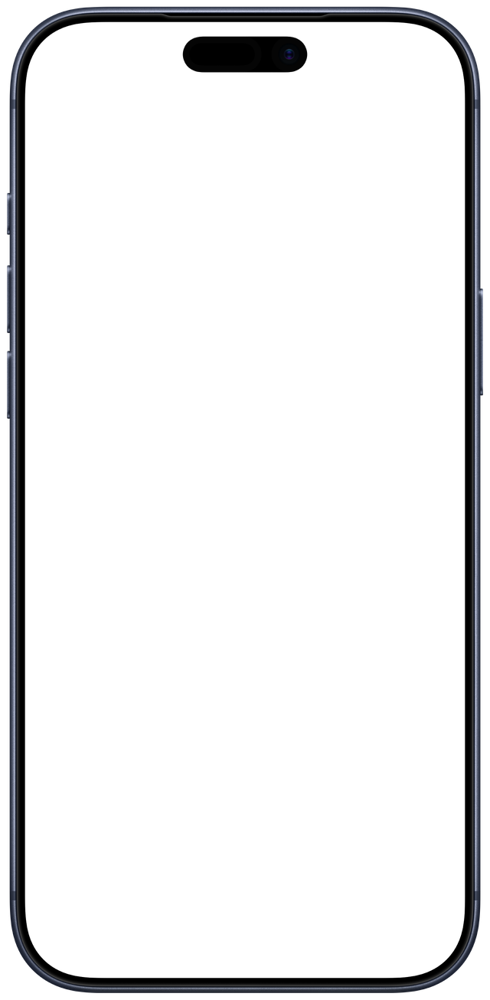

Alkalmazásletiltás iPhone és iPad esetén
Blokkolja a Reels és Shorts videókat. Közvetlenül az alkalmazásokban.
Blokkolja a Reels, Shorts és más rövid videókat a Instagram, YouTube, Facebook, X (Twitter) és más közösségi alkalmazásokban. Vagy válasszon bármilyen alkalmazást, amelyet blokkolni szeretne a Screen Time segítségével.
Ingyenes és nyílt forráskódú Nincs szükség fiókra
Rövid videók észlelésekor a Slowth blokkolja az alkalmazást. Használja a Screen Time-t és a képernyőfigyelést. Hogyan működik?


Az alkalmazások belsejében iPhone és iPad
Safari iPhone, iPad és Mac típusokban is
Az eszközön Nincs fiók. Nincs nyomon követés.

Az Ön alkalmazásai. Az Ön letiltási szabályai.
Válassza ki az alkalmazásokat. Állítsa le a végtelen görgetést.
Bármely kiválasztott alkalmazás letiltása a iPhone és iPad készülékeken. Vagy szakítsa meg a rövid videókat és történeteket a közösségi alkalmazásokban az eszközön található tartalomészlelés segítségével.
- Bármelyik választott alkalmazás
- Válasszon alkalmazásokat az Apple Screen Time választójában – közösségi hálózatokat, játékokat és bármi mást, amitől meg akar pihenni. Kikapcsolt megfigyelés esetén a kiválasztott alkalmazások blokkolva vannak; A lágy blokkolás és az ideiglenes szünetek megváltoznak, ha a hozzáférés engedélyezett.
- Reels és Shorts az alkalmazáson belül
- Instagram Reels, YouTube Shorts, Facebook, X (Twitter) és más közösségi hálózatok rövid videókkal: válassza ki a megszakítani kívánt tartalmat. Ha a megfigyelés be van kapcsolva, az észlelés rövid időre blokkolja az alkalmazást, így Ön kiléphet.
- Szünet, amikor szüksége van rá
- Használj egy lapot az ideiglenes hozzáféréshez, majd térj vissza a határaidhoz. Az alkalmazások és a Safari naponta három szünetet oszt meg a iPhone és iPad készülékeken.
Alkalmazásvédelem, lépésről lépésre
A alkalmazás blokkolásának beállítása három lépésben.
Válassza ki az alkalmazásait. Indítsa el a figyelést, ha konkrét tartalmat szeretne észlelni.
- 1
Szerezze be a Slowth-t
Telepítse a Slowth-t, nyissa meg az Alkalmazások lapot, és engedélyezze a Screen Time hozzáférést. Ezzel a iOS blokkolja a kiválasztott alkalmazásokat.
- 2
Válassza ki a blokkolási szabályokat
Válassza ki a blokkolni kívánt alkalmazásokat. A támogatott tartalomhoz válasszon rövid videókat, történeteket vagy mindkettőt.
- 3
Indítsa el az alkalmazás figyelését
Koppintson a Figyelés indítása elemre, és erősítse meg az Apple képernyőn megjelenő üzenetét. Az észlelés az eszközön fut; a képernyőképek nem kerülnek mentésre vagy feltöltésre.
Safari-ban is működik
Blokkolja a zavaró tényezőket. A böngészőjében is.
Használja a szükséges webhelyeket zavaró tényezők nélkül, amelyek folyamatosan görgetnek.
- Rövid videók elrejtése
- YouTube Shorts és Instagram és Facebook Reels elrejtése. Távolítsa el a Felfedezést és a trendeket a X-n.
- Válassza ki a hírfolyam végét
- A Instagram és Facebook előtolásvezérlői csökkentik a végtelen görgetést. A Instagram betáplálási lehetősége az Explore, Stories és más Reels felületekre is kiterjed.
- Egy teljes webhely letiltása, amikor szükséges
- Egy teljes támogatott webhely letiltása, beleértve a TikTok-t is. Válassza ki a beállításokat webhelyenként, és frissítse a blokkolási szabályokat, ahogy a webhelyek változnak.
Működik a iPhone, iPad és Mac modelleken. A Safari-nak nincs szüksége képernyőközvetítésre.

A Mac készüléken
Kevesebb görgetés. Safari kiterjesztéssel.
Tartsa elérhetővé a webhely többi részét, miközben elrejti a zavaró részeket, vagy teljesen blokkoljon egy támogatott webhelyet.
A Mac támogatás a Safari számára érhető el. Az alkalmazáson belüli felismerés és a képernyő figyelése a iPhone és iPad funkciók.
Az alkalmazásfelismerés egy képernyőn történő közvetítést használ, amelyet Ön kezdeményez. Míg fut, a Slowth képernyőképeket kap, amelyek más alkalmazásokat és érzékeny információkat is tartalmazhatnak – az alkalmazások kiválasztása korlátozza a blokkolást, nem pedig a képernyő hozzáférését.
A App Store alkalmazásban a képek ideiglenesen feldolgozódnak az eszköz memóriájában. A rendszer nem menti vagy tölti fel a kereteket, és figyelmen kívül hagyja a hangot. A iOS a felvételi jelzőt mutatja, miközben a figyelés aktív.
Nincs fiók, elemzési vagy hirdetési SDK. A Safari szűrés helyi; A szabályfrissítések letöltése továbbra is közönséges hálózati kérést jelent.
Letilthatom a Instagram Reels-t a Instagram alkalmazáson belül?
Igen. A iPhone vagy iPad készüléken válassza a Instagram lehetőséget, engedélyezze a rövid videó blokkolást, és indítsa el a figyelést a Slowth-ban. A Reels észlelésekor a Screen Time ideiglenesen letiltja a teljes Instagram alkalmazást. A Slowth nem távolítja el a Reels fület. A történeteket külön választhatja. Állítsa be a Instagram alkalmazást blokkolja a -t.
Letilthatom a YouTube Shorts-t a YouTube alkalmazáson belül?
Igen. Válassza a YouTube lehetőséget, engedélyezze a rövid videó blokkolást, és indítsa el a figyelést. A Slowth érzékeli a Shorts-t, és ideiglenesen blokkolja a YouTube-t. Úgy tervezték, hogy lehetővé tegye más tartalom használatát az észlelések között, de a felismerés hibákat okozhat. A különálló Safari bővítmény elrejti a Shorts-t a YouTube webhelyen.
Letilthatom a Snapchat, TikTok vagy más alkalmazásokat?
Igen. Kiválaszthatja az Apple Screen Time választójában elérhető alkalmazásokat, köztük a Snapchat és a TikTok. Kikapcsolt megfigyelés esetén a kiválasztott védett alkalmazások blokkolva vannak, kivéve, ha az ideiglenes hozzáférés vagy a lágy blokkolás lehetővé teszi számukra. Rövid videó észleléséhez kapcsolja be a megfigyelést. A felismerés attól függ, hogy mi látható a képernyőn, és hibázhat. Hogyan működik a blokkolás felügyelet nélkül? .
Működik a Facebook, X (Twitter) és más közösségi alkalmazásokban?
Igen. A rövid videófelismerés a közösségi alkalmazásokban működik, beleértve a Facebook-t és a X (Twitter)-t, és nem korlátozódik a Instagram-ra és a YouTube-ra. Válassza ki az alkalmazást, válasszon rövid videókat vagy történeteket, és kezdje el a figyelést. Az észlelés a képernyő elrendezésétől függ, ezért előfordulhat, hogy hiányzik a tartalom, vagy blokkolja a normál képernyőt.
A Safari-nak szüksége van képernyőfelvételre?
Nem. A Safari saját kiterjesztését használja a támogatott webhelyek szűrésére. A képernyő-hozzáférés csak a iPhone és iPad alkalmazásokon belüli tartalomfelismeréshez szükséges.
Mi történik, ha a figyelés leáll?
A kiválasztott védett alkalmazások általában rögzítés nélkül blokkolva vannak. A lágy blokkolás rövid időre engedélyezheti az alkalmazást a Slowth elhagyása után, majd használatkor ismét letilthatja. Az aktív ideiglenes hozzáférési szünet szintén lehetővé teszi a hozzáférést. Olvassa el ezeket a üzemmódokat.
Tarthatok egy kis szünetet a blokkolásban?
Igen. A iPhone és iPad készülékeken egy levél ideiglenes hozzáférést biztosít a kiválasztott alkalmazásokhoz és a Safari-hoz. A megosztott szünetrendszer kísérleti jellegű; A iOS késleltetheti a korlátozások visszaállítását. Az észlelési pihenők külön vannak, és nem költenek leveleket.
Mit zár a szigorú mód?
24 órán keresztül az engedélyezett korlátozások nem gyengíthetők. Korlátozásokat adhat hozzá, de nem engedélyezheti a teljes webhely blokkolását a zárolás alatt. Az időzítő túléli az újraindítást. Állítsa be, hogy engedélyezettek-e a szünetek az indítás előtt. Ez egy kötelezettségvállalási segédlet, nem hamisításbiztos szülői felügyelet.
A Slowth ingyenes? Létezik Android alkalmazás?
A Slowth ingyenes és nyílt forráskódú a GPLv3 alatt. A Android egy javasolt kutatási és prototípus munkafolyamat, nem elérhető alkalmazás.
Gondosan készült. Nyílt forráskóddal.
Egy kis projekt. Hosszú távra készült.
A Slowth-t a Denis Malin fejlesztette és tartja karban. A forráskód nyilvánosan elérhető. Visszajelzése segít az alkalmazás fejlesztésében.
Szervezetek és partnerek finanszírozására
Segítsen az embereknek, hogy kevesebb időt töltsenek a görgetéssel.
A projekt egy egyszeri 10 000 USD támogatást kér egy hat hónapos fejlesztési szakaszra. Ez egy finanszírozási kérelem.
- Tisztább beállítás és megbízhatóbb iPhone, iPad és Mac élmények.
- Jobb tartalomfelismerés, -értékelés és kompatibilitásteszt.
- Az összeállított alkalmazásverziók független ellenőrzése, a nyilvánosság tájékoztatása és egy lehetséges Android alkalmazás kutatása kísérleti prototípussal.
Kevesebb zavaró tényező